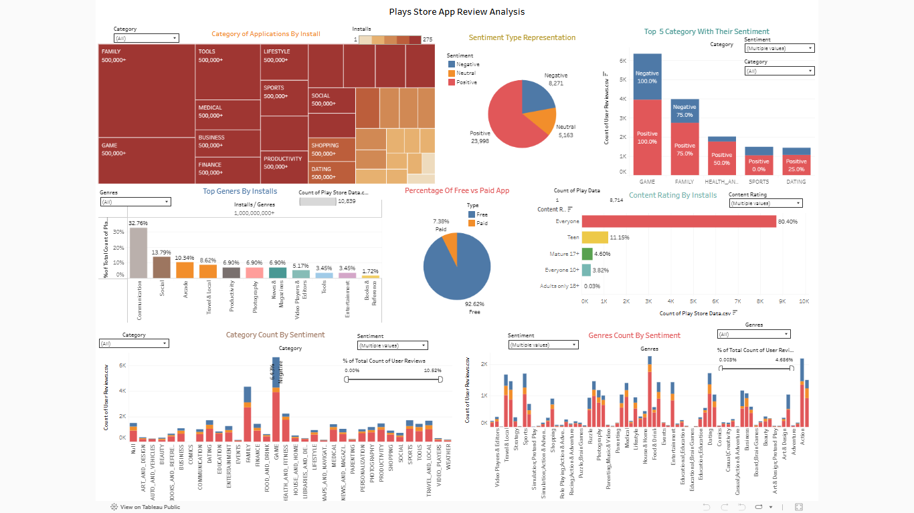
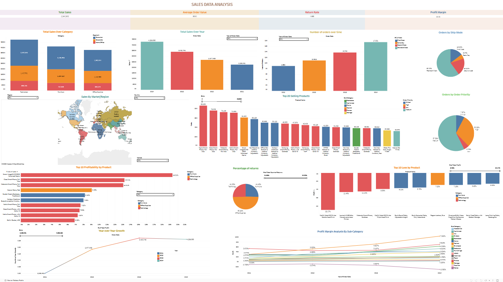

Forecasting India's EV Future
Comprehensive analytics study forecasting EV adoption trends across Indian markets using predictive modelling and visual storytelling.

Hand Sign Language Detection
Real-time ASL prediction using MediaPipe, OpenCV and ML models. Deployed with Gradio for live webcam demonstration.

India's Air Quality Index Prediction
Time-series & ML models forecasting AQI across major Indian cities, with interactive dashboard and model explainability.

Water Quality Analysis
ML case study predicting water potability based on chemical attributes using ensemble classification algorithms.

Twitter Sentiment Analysis
Sentiment classification of tweets using NLP pipelines. Live demo showing sentiment distribution and word cloud visuals.

Bike Sharing Demand Prediction
Regression model to forecast hourly bike rentals based on weather conditions, seasonality, and temporal patterns.

Sales Data Analysis
Tableau dashboard-driven insights from sales transactions using Python for data wrangling and Tableau for storytelling.

Google Play Store App Review Analysis
Python-based EDA and Tableau dashboards to uncover patterns in app feedback, ratings, and user sentiment.